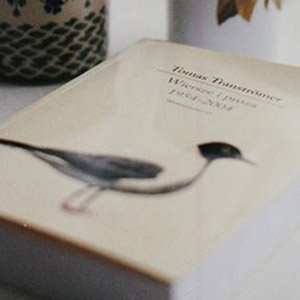

-
Chapitre 1
La culture et la lecture
-
Chapitre 2
la lecture chez l’enfant
-

Chapitre 3
L’évasion à travers le livre
-
Chapitre 4
Le rôle de la bibliothèque/h4>
-
Chapitre 5
Exercer son imaginaire
-
Chapitre 6
Inntroduction
Il est important que les gens précisent dans quel camp ils se rangent et pourquoi, et s’ils pourraient être de parti pris. Une déclaration d’intérêts de la part des membres, en quelque sorte. Donc, je vais vous parler de lecture. Je vais vous dire que les bibliothèques sont importantes. Je vais suggérer que lire de la fiction, lire pour le plaisir, est une des plus importantes activités à laquelle on puisse s’adonner. Je vais lancer un appel passionné pour que les gens comprennent ce que sont les bibliothèques et les bibliothécaires, et qu’il faut les préserver. Je suis de parti pris, de façon évidente et gigantesque : je suis auteur, souvent auteur de fiction. J’écris pour les enfants et les adultes. Depuis une trentaine d’années, je gagne ma vie par mes mots, en majorité en inventant des choses et en les écrivant. Il est évidemment de mon intérêt que les gens lisent, qu’ils lisent de la fiction, que bibliothèques et bibliothécaires continuent à exister et aident à favoriser l’amour de la lecture et des lieux où la lecture peut se pratiquer. Donc, en tant qu’auteur, je suis partial. Mais je suis beaucoup plus partial en tant que lecteur. Et plus encore en tant que citoyen britannique. Je suis venu ici ce soir donner une conférence sous les auspices de la Reading Agency : une organisation humanitaire qui a pour mission d’offrir à chacun les mêmes chances dans la vie en aidant les gens à devenir des lecteurs assurés et enthousiastes. Une organisation qui soutient des programmes d’alphabétisation, des bibliothèques et des individus, et qui encourage ouvertement et effrontément l’action de lire. Parce que, nous dit-elle, tout change, quand on lit. Et c’est de ces changements, de cette action de lire que je suis venu vous parler ce soir. Je voudrais parler de ce que la lecture accomplit. Dire à quoi elle sert.